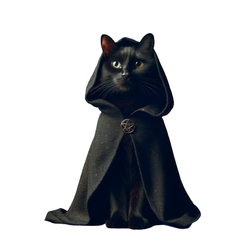

Tokenomics
The Holy Book Of FUDO

Total Supply
Only 10 Billion FUDO will ever exist. The order has no need of more.
BLOOD POOL
The order will be adding 90% of FUDO to the Blood Pool. dip into it as you like.
Blood Sacrifice
FUDO フード付きの猫 takes a 1% blood tax on all transactions.The blood will be used for spreading the word of FUDO

公平 kōhei
FUDOフード付きの猫 fairly launch but FUDO gib early believers some パーセント pasento for providing first blood.